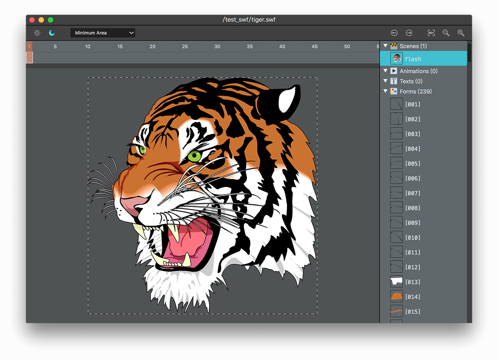
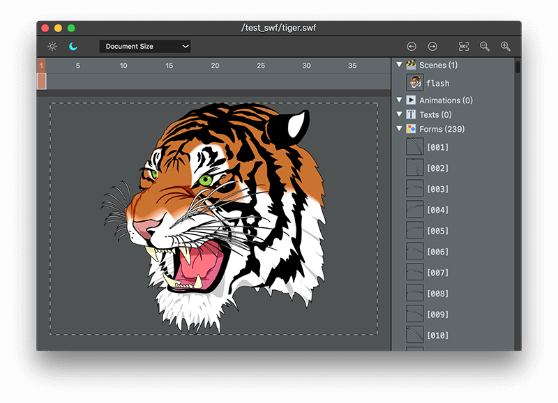
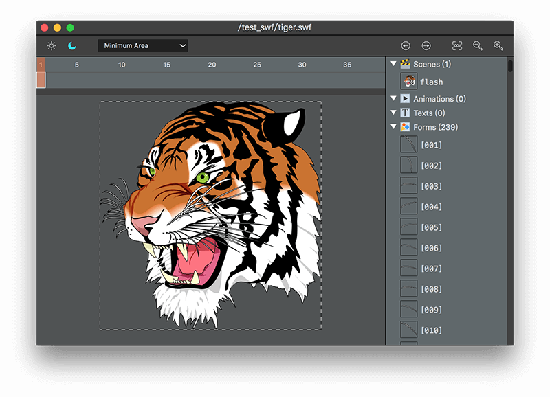

界面

Vecode 的界面分成 4 大部分：
- 最右边是部件选择区。
- 最上面是工具栏。
- 工具栏下面是桢选择区。
- 桢选择区下面是预览区。
部件选择区
有些矢量文件由多个子部件组成，比如 Flash 中可以将图形转换成元件，这样每个元件就会对应成子部件。在部件选择区可以选择不同的部件，在预览区显示。
工具栏
工具栏上面的控件，分成 4 个组。
切换主题
可以切换白天、黑夜两种主题风格。
导出选项
有两个选项：
- Document Size，表示导出的原始文档大小。
- Minimum Area，表示忽略原始文档大小，而导出真正的大小。
见下表，虚线框表示最终导出的区域。
| Document Size
| Minimum Area
|
|  |
 |
跳转
切换部件之后，可以跳转到前一部件或者后一部件，跟菜单项 Jump Back 和 Jump Forward 对应。
预览缩放
跟菜单项 Real Size、Zoom Out、Zoom In 对应。
桢选择区
有时我们会将多个图片放到同一个文件当中，并且新建多个动画桢，每一桢对应于一张图片。通过桢选择区可以选择对应的动画桢。
比如本软件的用到的每个图标就对应于一桢，并且在 Flash 软件中打上标签。标签的文字就是默认的导出的文件名字，这样就不用反复命名。
预览区
预览区占据界面的主要部分，虚线框中的图形就是最终的导出效果。将矢量图文件拖进预览区就可以打开文件。
右键菜单
在预览区点击鼠标右键，可以调出快捷菜单。
Reload 菜单项可以重新载入当前的文件。
快速跳转
在预览区，按 Command + 鼠标左键 选择对应的部件，可以弹出快速跳转菜单。
导出
打开矢量图之后，点击菜单项 Export... 或使用快捷键 Command + S，调出导出界面，从下拉框中选择各种导出格式。
Quartz code
Quartz code 是开发 iOS 或者 Mac 软件使用的 Quartz 2D 绘图代码。可以选择 Objective-C 语言或 Swift 语言。
Quartz code 有一个勾选框 No color 。
矢量图作为 icon 的或者一些按钮图片时，经常需要根据实际情况来改变颜色。比如按钮普通状态下是白色，按下状态是红色等。这样图片本身的颜色是没有意义的，这时可以在勾选 No color，导出的绘图代码就不会设置颜色。
而在运行时修改颜色，比如已经导出同一个 g_picture_icon_moon，可以使用
g_picture_icon_moon.transToImage(CGSizeMake(30, 30), UIColor.redColor())
g_picture_icon_moon.transToImage(CGSizeMake(30, 30), UIColor.yellowColor())
g_picture_icon_moon.transToImage(CGSizeMake(30, 30), UIColor.blueColor())
转换成各种颜色的图片。
注意：勾选 No color 之后，就不能输出渐变了。
Android graphics code
Android graphics code 顾名思义，就是 Android 平台上的绘图代码。
Android 平台的绘图代码是 java 文件，需要在导出时候输入包(package）名。程序会自动记录下上一次导出时输入的包名。
比如您导出时候输入的文件名为 PictureTiger.java, 包名为 com.example，就会自动定义类 com.example.PictureTiger。
package com.example.PictureTiger;
import android.graphics.*;
import com.vecodekit.GraphicsPicture;
public class PictureTiger extends GraphicsPicture
{
xxxxx
}